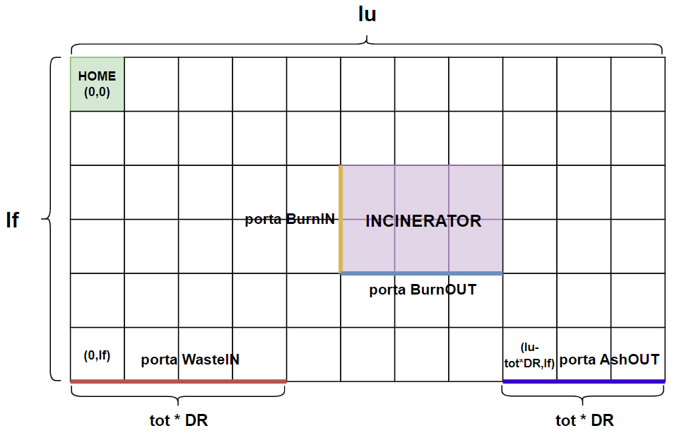
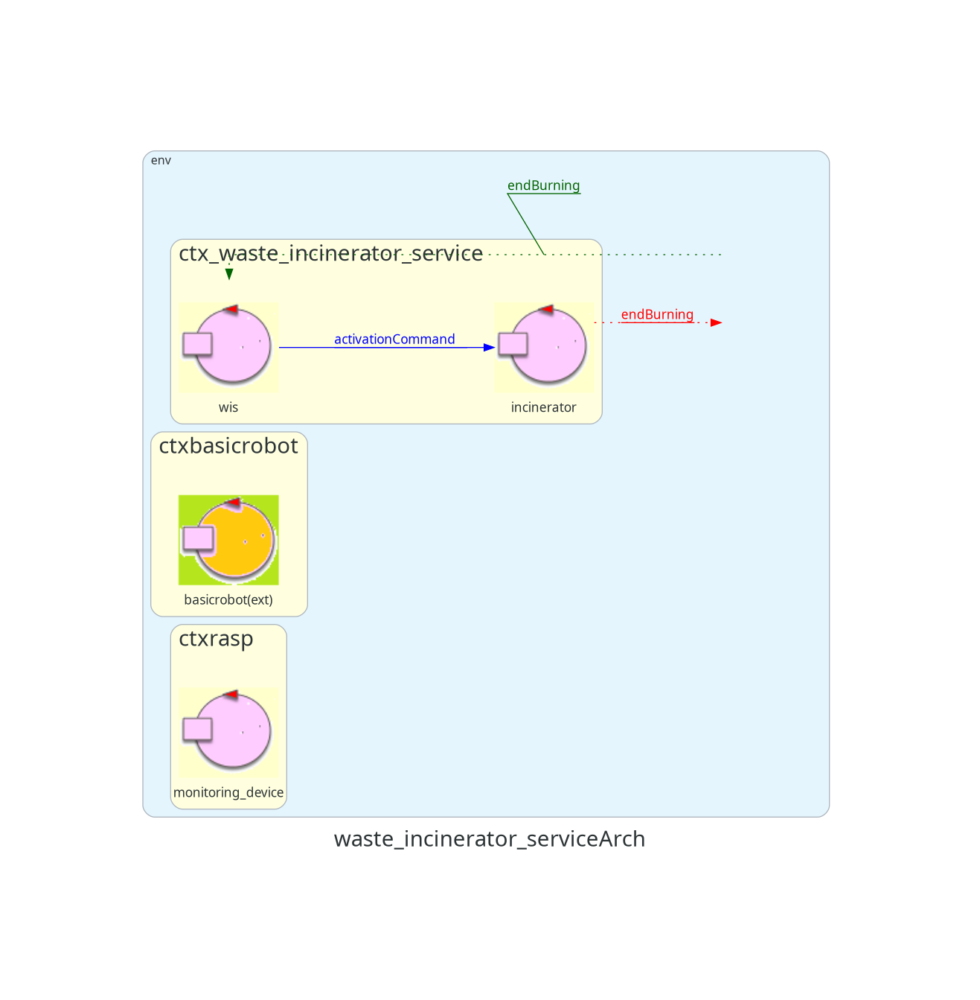

Introduzione
Un'azienda intende realizzare un WasteIncineratorService per trattare i rifiuti bruciandoli e necessita di un servizio di sistema software (WIS) che controlli un robot (chiamato OpRobot) per spostare i rifiuti.
Requisiti
Il seguente link porta al documento dei requisiti fornito dal cliente.
Documento requisiti
Analisi dei requisiti
Parte strutturale
In questa prima parte dell'analisi dei requisiti, andiamo a modellare i componenti della parte "strutturale" dell'edificio.
La Service Area è uno spazio piano Euclideo delimitato da bordi.
L'area è vista come un sistema di coordinate che parte dal punto in alto a sinistra, indicato come (0,0).
La coordinata X(ascisse) cresce verso destra, mentre la coordinata Y(ordinata) cresce verso il basso.

Il Bordo perimetrale ha lunghezza
lf+ld+lr+lu.Poichè la stanza è rettangolare, si ha
lf==lr && ld==lu
DR=2R, essendoRil raggio del cerchio in cui può essere racchiuso il Robot
Lo Stato iniziale del OpRobot è l’angolo superiore sinistro, detto Home. (coordinate (0,0))
Incinerator è dotato di un proprio comportamento, in quanto deve poter essere attivato da remoto e comunicare al OpRobot e al sistema quando è terminatala fase di burning.
Per semplicità, la sua rappresentazione all'interno della Service Area è data da un rettangolo, caratterizzato quindi di quattro coordinate che rappresentano i suoi vertici.
Esso è dotato di due porte (BurnIN e BurnOUT) che vengono mappate rispettivamente come lato sinistro e lato basso del Incinerator.
La porta di WasteIN viene modellata come un segmento (non ha area in quanto è una porta che da verso l'esterno della Service Area) che parte dalle coordinate (0, lf) e ha una lunghezza di tot unità robotiche (tot * DR) non specificate nei requisiti.
La porta di AshOUT viene modellata come un segmento (non ha area in quanto è una porta che da verso l'esterno della Service Area) che parte dalle coordinate (lu - tot*dr, lf) e ha una lunghezza di tot unità robotiche (tot * DR) non specificate nei requisiti.
Di seguito un'immagine che riassume la locazione dei componenti nella Service Area: (il posizionamento e la dimensione del Incinerator e la dimensione delle porte WasteIN e AshOUT sono solo indicative)

{kind=link}
La suddivisione della stanza in celle è un possibile modello in quanto il committente ci fornisce un DDR Robot e quest'ultimo ci permette di definire un'unità di misura per la stanza. Tale unità di misura è l'unità robotica (DR). Ogni cella misura quindi un DR.
La dimensione della Home non viene specificata nei requisiti e quindi per semplicità la immaginiamo di area 1 DR (una cella).
Il contenitore WasteStorage è esterno alla ServiceArea, quindi non necessita di coordinate per essere mappato.
La capacità massima del container non è specificata nei requisiti, quindi in questa prima fase si considera "illimitata".
La bilancia Scale di cui è dotato il WasteStorage viene inglobata all'interno di quest'ultimo in quanto l'unico compito della bilancia è
misurare il peso totale dei Roll Packets attualmente presenti nel container.
Il contenitore AshStorage è esterno alla ServiceArea, quindi non necessita di coordinate per essere mappato.
La capacità del container è fissata alla cenere di circa 3 o 4 Roll Packets.
Il MonitoringDevice è esterno alla ServiceArea, quindi non necessita di coordinate per essere mappato.
Esso è composto da un Sonar e da un Led che lavorano su un RaspberryPi.
Formalizzazione dei componenti
Dobbiamo ora rappresentare i componenti descritti nella sezione precedente a livello software.
Dall'ingegneria del software, sappiamo che un'entità può essere modellata come una funzione, un POJO o un processo.
Analizzando però i requisiti e prendendo come esempio Incinerator, notiamo che esso per definizione deve poter ricevere e inviare messaggi con altre entità del sistema.
Abbiamo quindi un abstraction Gap tra la definizione di Incinerator e i modi che conosciamo per rappresentarlo, in quanto né una funzione nè un POJO e nemmeno un processo ha intrinsicamente il concetto di scambio di messaggi.
Pensiamo dunque di modellare Incinerator come un Service.
Anche in questo caso però abbiamo un problema, in quanto per rappresentare un servizio dobbiamo conoscerne la tecnologia, ma a questo livello non vogliamo essere tecnology dependent.
Per fortuna, la nostra software house ci fornisce un linguaggio di modellazione(ovvero un meta-modello, chiamato QAK) che ci permette di definire degli Attori.
Forniti ora anche di questo concetto, andiamo a modellare i componenti descritti in precedenza:
- Incinerator: Attore, in quanto deve poter scambiare informazioni con il sistema e con l'OpRobot. Esso è dotato di uno stato (0 = non sta bruciando, 1 = sta bruciando).
- WasteStorage container: Si è deciso di non modellare questa entità in quanto mero contenitore di RP, e quindi non avente alcun comportamento significativo all'interno del sistema.
Ciò che invece si decide di modellare è la Scale, in quanto entità che si occupa di rilevare la presenza di RP all'interno dell'area suddetta nonchè il peso complessivo.
Non vengono fornite ancora informazioni a sufficienza per poter stabilire se modellare la bilancia come attore o come POJO, e per questo motivo si demanderà la decisione all'analisi del problema. - AshStorage container: Si è deciso di non modellare questa entità in quanto mero contenitore di cenere, e quindi non avente alcun comportamento significativo all'interno del sistema.
- MonitoringDevice: Attore, che fa uso del sonar per rilevare l'altezza della pila di cenere contenuta all'interno dell'AshStorage, e del led per comunicarne lo stato.
Nel modello dei requisiti non ci preoccupiamo della sua architettura (Sonar + Led), ma lo consideriamo come un singolo componente, in quanto non si hanno ancora dati a sufficienza dal solo documento dei requisiti e si demanderà una discussione più approfondita nell'analisi del problema.
Infine, andiamo a discutere la rappresentazione del OpRobot.
Dal documento dei requisiti non c'è nulla che mi induca a modellarlo come attore o come POJO.
Tra le due opzioni, in realtà, sembrerebbe più opportuno vederlo come entità passiva che riceve gli ordini dal WIS e li esegue, in quanto non traspare mai l'idea che comunichi con le altre entità tramite messaggi oppure che possa avere un flusso di esecuzione indipendente.
In ogni caso, si decide di demandare la decisione ad uno stadio successivo di analisi del problema.
Nel nostro modello dei requisiti, sfruttiamo il BasicRobot che ci viene dato e che non dipenderà dallo specifico robot fisico (DDR Robot) che ci fornirà il committente.
Architettura dei requisiti
Definiamo ora un modello che descrive come i componenti elencati in precedenza interagiscono tra loro.

Gli attori QAK permettono di definire tre tipologie di messaggio:
{kind=link}
- Dispatch: un messaggio inviato a un preciso destinatario senza attesa di una risposta (in modo detto anche fire-and-forget);
- Request: un messaggio inviato a un preciso destinatario aspettandosi da parte di questi una reply logicamente correlata alla richiesta;
- Event: un messaggio inviato a chiunque sia in grado di elaborarlo
Nei requisiti non viene specificato quale entità abbia il compito di impartire tale comando. Dopo una discussione con il committente, ci ha confermato che è compito del WIS farlo all'avvio del sistema.
La notifica che la fase di burning è terminata, viene modellata come un messaggio endBurning di tipo Event.
Tale scelta è dovuta dal fatto che si associa bene al requisito di emissione di un segnale da parte del Incinerator.
Notiamo come il sistema è distribuito su almeno tre nodi computazionali differenti.
Si dovranno sviluppare i macro-componenti:
- wis
- monitoring_device
- incinerator
Piano di test
Già nella prima fase di analisi dei requisiti si decide di predisporre un piano di test funzionale.
A tal fine si prevede di verificare il corretto comportamento del sistema soltanto osservandolo ai morsetti.
In particolare, occorre verificare, che, avendo dei pacchetti in ingresso, dopo un tempo > BURNTIME, si trovi della cenere in uscita.
Più nello specifico, se si ha un numero arbitrario di pacchetti nel WasteStorage, la cenere nell'AshStorage (ammesso che nessuno nel frattempo la svuoti) sia della quantità corrispondente a quei pacchetti.
Non essendo ancora riusciti, per mancanza di informazioni nel documento dei requisiti, a creare un modello completo e pienamente funzionante (di conseguenza non testabile), non è ancora possibile verificare sperimentalmente quanto detto sopra.
Di conseguenza, si demanda la fase di testing vera e propria agli stadi successivi del progetto.
Sprint futuri
Nel prossimo sprint si prevede di fornire un primo prototipo funzionante che ricopra la logica principale del sistema.In particolare, si prevede di modellare l'inceneritore e l'interazione tra il robot e il WIS.